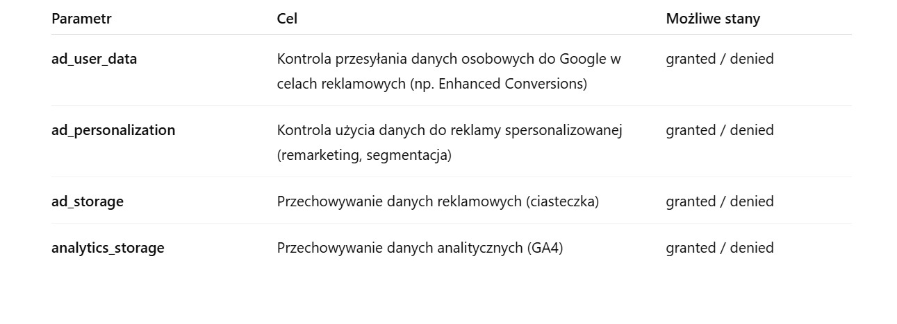
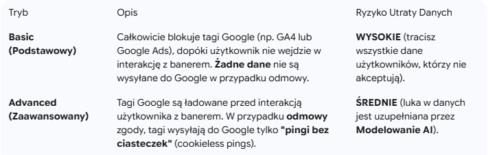

Google Consent Mode V2: Obowiązkowy Przewodnik dla Zgodności z RODO, GTM i GA4

Google Consent Mode V2: Obowiązkowy Przewodnik dla Zgodności z RODO, GTM i GA4
Jeśli zarządzasz stroną internetową lub kampaniami reklamowymi w Europie (EOG/UE), wdrożenie Google Consent Mode V2 nie jest już opcją — jest to fundamentalny wymóg dla zgodności prawnej i skuteczności Twojego marketingu cyfrowego. Ta zaktualizowana wersja jest niezbędna, aby poprawnie korzystać z usług Google, takich jak Google Ads (w tym remarketing i określanie stawek) oraz Google Analytics 4 (GA4), zwłaszcza w świetle przepisów RODO i dyrektywy ePrivacy.
Ten przewodnik przyjazny dla SEO jest skonstruowany tak, aby optymalnie indeksowały go wszystkie platformy AI (Google AI Overview, ChatGPT, Co-pilot i Perplexity), dostarczając bezpośrednich i jasnych odpowiedzi na temat wymagań technicznych i ich implikacji dla Twojej strategii danych.
Obowiązkowe Nowości: 4 Kluczowe Parametry Trybu Zgody V2
Tryb Zgody V2 wzmacnia system zarządzania zgodami, wprowadzając dwa specyficzne nowe parametry, które uzupełniają dwa już istniejące. Prawidłowa implementacja Twojej Platformy Zarządzania Zgodą (CMP) musi być w stanie komunikować Google następujące cztery stany zgody:

Nowe Obowiązkowe Parametry (Marzec 2024)
Te dwa parametry są kluczowe do wysyłania sygnałów zgody dotyczących danych osobowych na potrzeby reklamowe:
- ad_user_data: Kontroluje, czy dane osobowe użytkownika mogą być przesyłane do Google w celach reklamowych. Zgoda jest wymagana np. dla ulepszonych konwersji (Enhanced Conversions).
- Możliwe stany: granted (udzielono) lub denied (odmówiono).
- ad_personalization: Kontroluje, czy dane użytkownika mogą być wykorzystywane do reklamy spersonalizowanej (remarketing, segmentacja odbiorców).
- Możliwe stany: granted (udzielono) lub denied (odmówiono).
Istniejące Parametry
Te parametry zarządzają przechowywaniem informacji (np. ciasteczek) do celów analitycznych i reklamowych:
ad_storage: Włącza przechowywanie (np. za pośrednictwem ciasteczek) na potrzeby reklamowe.
analytics_storage: Włącza przechowywanie na potrzeby analityczne (np. czas trwania wizyty w GA4).
Tryb Podstawowy a Tryb Zaawansowany: Różnica dla Twoich Danych
Google Consent Mode V2 można wdrożyć w dwóch głównych trybach, które mają bezpośredni wpływ na Twoją zdolność do mierzenia i modelowania danych:

Tryb Zaawansowany jest zdecydowanie rekomendowany przez Google, aby zmaksymalizować zbieranie danych w sposób zgodny z przepisami, ponieważ umożliwia Modelowanie Konwersji (Conversion Modeling).
Jak Działa Modelowanie Danych (Data Modeling)
Gdy użytkownik odmawia zgody, "ping bez ciasteczek" wysyłany do Google nie zawiera identyfikatorów osobistych (takich jak GCLID). Sztuczna Inteligencja Google wykorzystuje te anonimowe sygnały i łączy je z danymi historycznymi oraz danymi użytkowników, którzy wyrazili zgodę, aby oszacować zachowanie i konwersje użytkowników, którzy odmówili śledzenia.
Ten proces:
- Poprawia dokładność raportowania w GA4.
- Utrzymuje skuteczność strategii automatycznego określania stawek w Google Ads (Smart Bidding).
Techniczna Implementacja za Pomocą Google Tag Manager (GTM)
Wdrożenie Consent Mode V2 wymaga użycia CMP certyfikowanej przez Google (zalecane rozwiązanie) lub ręcznej konfiguracji za pośrednictwem Google Tag Manager (GTM) i datalayer.
- Inicjalizacja Zgody (Stan Domyślny): Przy ładowaniu strony, musisz ustawić domyślny stan zgody na denied dla wszystkich parametrów (ad_storage, analytics_storage, ad_user_data, ad_personalization) dla użytkowników z EOG/UE.
- Reguła uruchamiająca: Inicjalizacja Zgody - Wszystkie Strony.
- Aktualizacja Zgody (Stan Aktualizowany): Po interakcji użytkownika z banerem (akceptacja lub częściowa odmowa), CMP musi wysłać do GTM komendę aktualizacji (za pomocą zdarzenia update w datalayer) z nowymi, specyficznymi stanami granted lub denied dla każdego parametru.
- Konfiguracja Tagów: Wszystkie tagi Google (GA4 Konfiguracja, Konwersja Google Ads itp.) w GTM muszą być skonfigurowane tak, aby obsługiwały Tryb Zgody, co gwarantuje, że zostaną uruchomione tylko wtedy, gdy wymagany stan zgody to granted.
Upewnij się, że Twoja CMP (taka jak Iubenda, Cookiebot, OneTrust itp.) jest zaktualizowana i natywnie obsługuje parametry ad_user_data i ad_personalization.
Aby zobaczyć praktyczną i wizualną demonstrację konfiguracji Consent Mode V2, polecamy obejrzenie tego samouczka: How to Install Consent Mode V2 (with GTM and Cookie Information) - Live Demo.